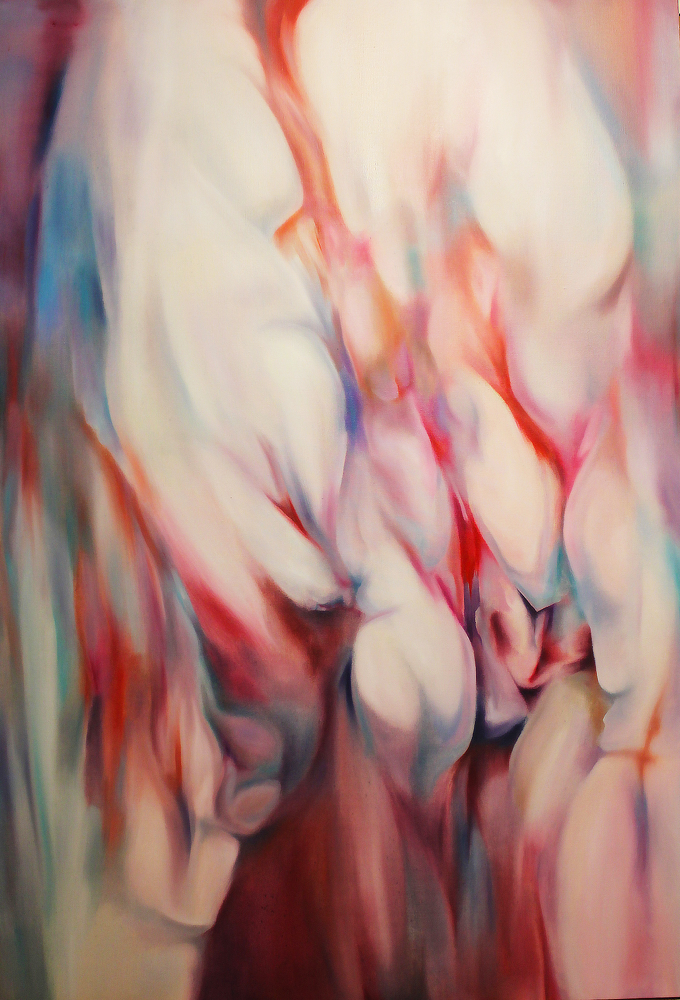
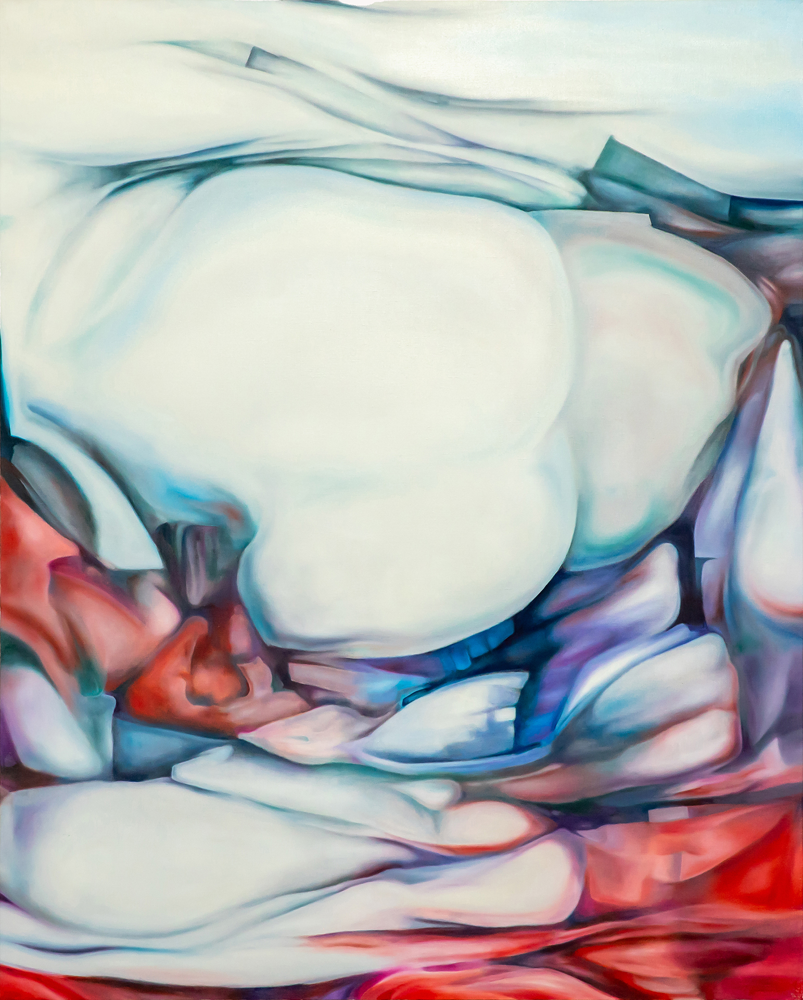
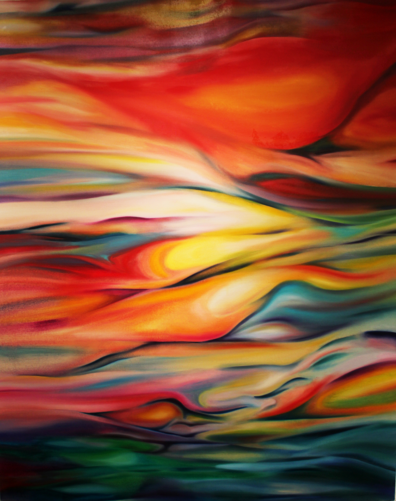
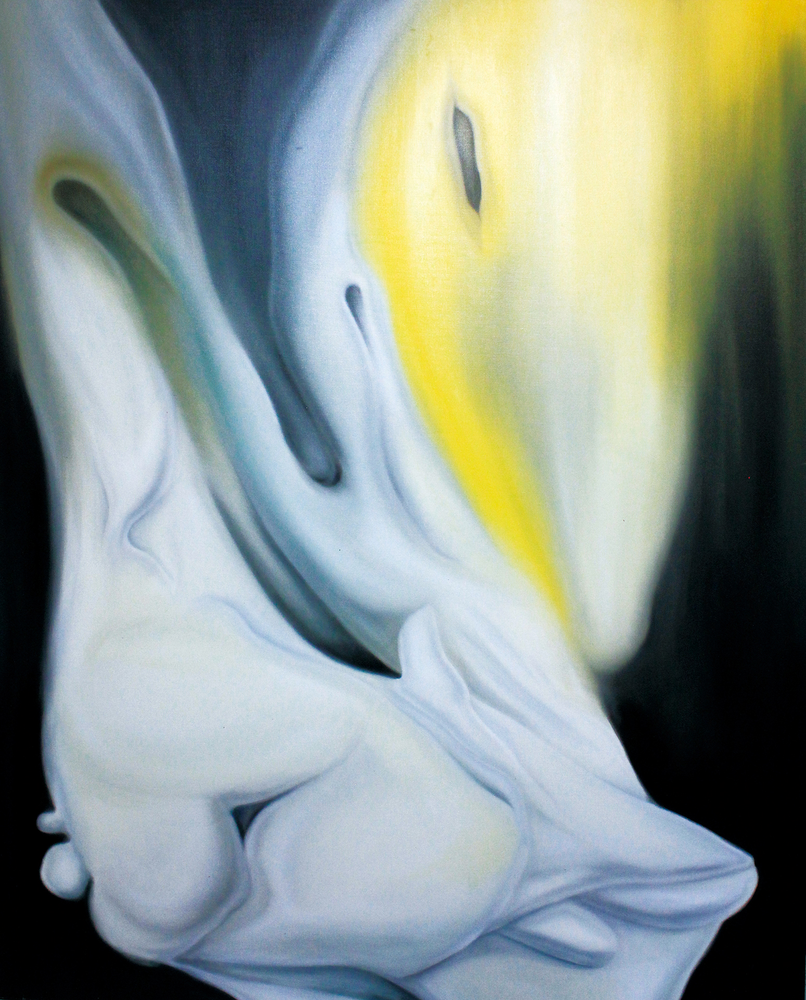
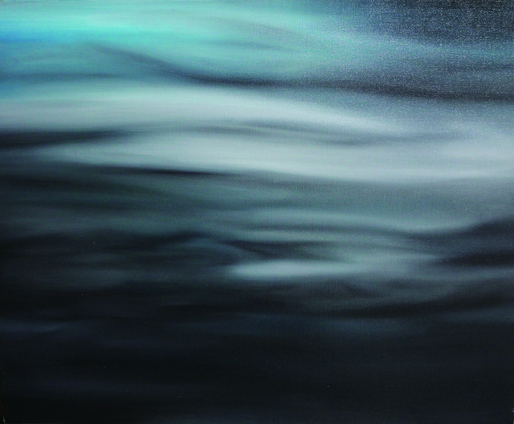
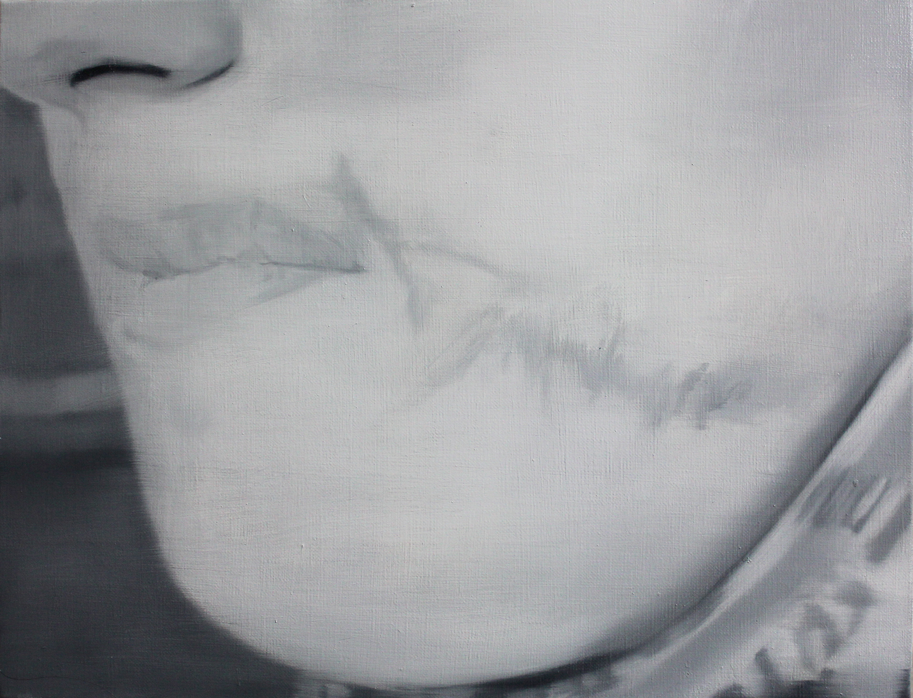

Works
作品年譜
変容する絵画
Cave Series
森 20251217
Forest
130.3 × 162 cm ／ 油彩・キャンバス
左美都の山林を歩きながら感じた、木々の間に漂う光と沈黙。その場の空気そのものを描こうとした作品です。形を明確に描くのではなく、色の重なりと筆の痕跡によって「森にいる感覚」が生まれるよう意図しました。土地の〈いと〉の記憶が、絵具の層に染み込んでいます。
Cave Series
山脈
Mountain Range
500 × 600 cm ／ 油彩・キャンバス
高さ5メートル、幅6メートルという圧倒的なスケールの大作。信州の山並みを「見る」のではなく、山と同化するような体験を目指しました。地質と時間の堆積が、絵具の重なりとして現れています。

Cave Series
石筍 20230405
Stalagmite
162 × 112 cm ／ 油彩・キャンバス
石筍とは、洞窟の床から水滴が積もってできる石の柱のこと。何千年もかけてほんの数センチ伸びるその姿に、時間の蓄積そのものを見ました。左美都の地下に眠る地層のイメージと重なり、人の記憶が層として積み重なる様子を描いています。

Variant Series
スズラン
ΑΦΡΟΔΙΤΗ（アフロディーテー）
162 × 130.3 cm ／ 油彩・キャンバス
左美都に自生するスズランは、毒を持ちながら清楚な白い花を咲かせます。ギリシャ神話の美の女神アフロディーテーの名を副題に持つこの作品は、美しさと危うさが同居する存在を描いています。自然の中に潜む矛盾と、それでも咲き続けようとする力を表現しました。

Cave Series
夕焼け
Evening Glow
162 × 130.3 cm ／ 油彩・キャンバス
子どもの頃、左美都の野原から見た夕焼けの記憶。空が燃えるような赤から、夜の静けさへと変わっていく一瞬を閉じ込めました。懐かしさと切なさが混ざり合う感覚——それは〈いと〉として刻まれた時間の一端です。

Variant Series
リリス（胸部）
Lilith Remnants-2
116.7 × 91 cm ／ 油彩・キャンバス
リリスとは、旧約聖書外典に登場する「最初の女性」とも言われる存在。歴史の中で消された声、忘れられた記憶の断片を、身体の部位として描くシリーズです。かつて存在した何かの痕跡を絵画として残しています。

Cave Series
明るい洞窟
Bright Cave
162 × 162 cm ／ 油彩・キャンバス
「洞窟」といえば暗くて閉じた場所を想像しますが、この作品の洞窟は明るい。それは恐れるべき場所ではなく、自分の内側に戻っていく入口のようなものです。正方形の画面が、内と外の境目がないことを暗示しています。

Variant Series
上に溶ける…
Dissolving Upward
162 × 130.3 cm ／ 油彩・キャンバス
固いものが溶けて、上へと向かっていく。形があることと、形がないことの間を探った作品です。人間の記憶や感情が気化していくような感覚は、失われることではなく、別の状態へと変化することだと気づきました。

Cave Series
into_cave
into_cave
53 × 65.2 cm ／ 油彩・キャンバス
「洞窟へと入っていく」瞬間を描いた、Caveシリーズの出発点となった小品。暗闇の中に一歩踏み込む感覚——恐怖ではなく、好奇心と静けさがそこにあります。津田翔一の核心である「洞窟（＝単位世界）」という概念が生まれはじめた作品です。

Cave Series
傷(5)(イスラエルの少女、2008年)
Scar(5) (Israeli Girl, 2008)
31.8 × 41 cm ／ 油彩・キャンバス
霞がかったモノクロームの画面の向こうから、ひとりの少女が静かにこちらを見つめています。意図的に焦点をぼかしたような特異な筆致によって描かれたポートレイトです。全体を覆う揺らぎは「薄れゆく記憶の危うさ」を思わせる一方で、顔の中心に刻まれた「傷」の存在感をより一層、生々しく浮き彫りにしています。2008年という時代背景、そしてイスラエルという土地。彼女の曖昧な表情の奥に潜む言葉にならない痛みと、それでも確かにそこにある生命力が、見る者の心に静かな波紋を広げます。
![CG [apocalypse] - III](images/【CG(Cell-Graphics) [apocalypse] - III】 - 修正後ー.jpg)
Cell-Graphics
Cell-Graphics [apocalypse] - III
Cell-Graphics [apocalypse] - III
21 × 29.7 cm ／ 鉛筆・紙
鉛筆のみで描かれた細密なドローイングシリーズ「Cell-Graphics（CG）」。細胞（Cell）のように増殖していく形の連鎖が画面を埋め尽くします。「世界の終わり（apocalypse）」を主題とし、すべての始まりとなる根源的な問いを内包しています。